María Cristina Peñuela Mora
mariacristina.penuela@ikiam.edu.ec
Desarrollo y coordino proyectos interdisciplinarios alrededor de los servicios ecosistémicos que ofrecen los productos no maderables del bosque, como palmas, hongos y otras especies, y de que manera estos y sus interacciones con la gente, los polinizadores y los dispersores se ven afectados por el clima y el cambio global. Proyectos en curso acerca de la ecología y demografía de palmas del piedemonte Andino –Amazónico. Dinámica de un bosque piemontano en la reserva biológica Colonso Chalupas RCCH y macrohongos de la RCCH.
URL/Sitio Web personal (ResearchGate, ORCID, GoogleScholar): https://www.researchgate.net/profile/Maria_Penuela
Grupo de Investigación: Ecosistemas Tropicales y Cambio Global

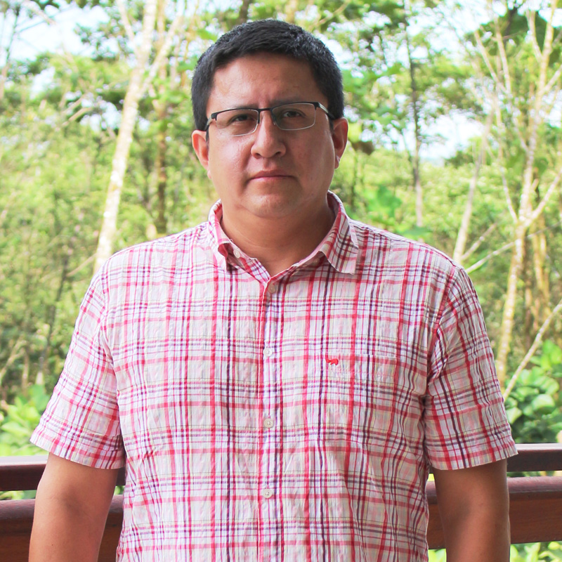
Pablo Cuenca
pablo.cuenca@ikiam.edu.ec
El impacto del cambio de uso de suelo, la deforestación evitada y la fragmentación sobre los servicios ecosistémicos y la biodiversidad.
1. Cuenca P., Robalino J., Arriagada R., Echeverría C. Are government incentives effective for avoided deforestation in tropical Andean landscapes? PLOS ONE https://doi.org/10.1371/journal.pone.0203545
2. Noh J., Echeverria C., Pauchard A., Cuenca P. 2018. Extinction debt in a biodiversity hotspot: the case of the Chilean winter rainfall-valdivian forest. Landscape and Ecological Engineering. https://doi.org/10.1007/s11355-018-0352-3
3. Cuenca P, Echeverria C. 2017. How do the protected landscapes associated with high levels of biodiversity and population change? PLOS ONE 12(7): e0180537 https://doi.org/10.1371/journal.pone.0180537
URL/Sitio Web personal (ResearchGate, ORCID, GoogleScholar): https://www.researchgate.net/profile/Pablo_Cuenca
Grupo de Investigación: N/A
Jesús Ramos
jesus.ramos@ikiam.edu.ec
Economía ecológica, fiscalidad ambiental, así como desarrollo económico y evolución de los sistemas económicos desde un punto de vista biofísico, aplicando conceptos de la termodinámica y de la teoría de sistemas complejos. Trabajo en estudios de metabolismo social, evaluación ambiental integrada, y evaluación multi-criterial social.
Ramos-Martin, J., Falconi, F., Cango, P. (2017): "The concept of caloric unequal exchange and its relevance for food system analysis: The Ecuador case study", Sustainability, Vol 9(11), 2068. http://dx.doi.org/10.3390/su9112068
Velasco, R., Ramos-Martin, J., Giampietro, M. (2015): "The energy metabolism of China and India between 1971 and 2010: Studying the bifurcation", Renewable & Sustainable Energy Reviews, Vol. 41: 1052-1066. http://dx.doi.org/10.1016/j.rser.2014.08.065.
Giampietro, M., Aspinall, R.J., Ramos-Martin, J., Bukkens, S.G.F (Eds.)(2014): Resource Accounting for Sustainability Assessment: The Nexus between Energy, Food, Water and Land Use, Series: Routledge Explorations in Sustainability and Governance, Routledge. ISBN 978-0-415-72059-5
URL/Sitio Web personal (ResearchGate, ORCID, GoogleScholar): http://jesusramos.org/research.html
Grupo de Investigación: Población y Ambiente

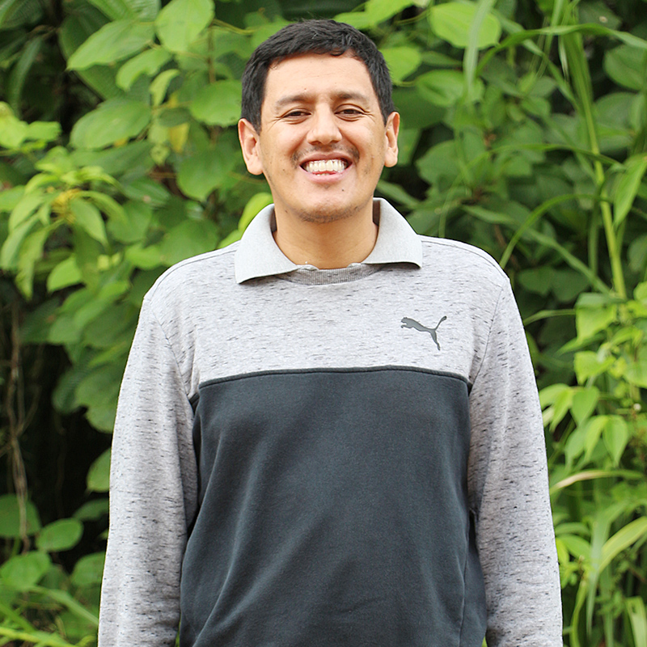
Pablo Andrés Cisneros Pérez
pablo.cisneros@ikiam.edu.ec
1) Aislamiento y caracterización de productos naturales con actividad biológica y/o nutracéutica, para el tratamiento de enfermedades, control de plagas, modelos biológicos, etc.
2) Desarrollo de metodologías sintéticas para la obtención de familias de compuestos químicos de interés.
3) Diseño y síntesis de moléculas con posibles aplicaciones en la fabricación de dispositivos electrónicos como celdas fotovoltaicas, sensores, diodos electroluminiscentes, etc.
1. Influence of the gate bias stress on the stability of n-type Organic Field-Effect Transistors based on Dicyanovinylenes-Dihydroindenofluorene semiconductors
2. Synthesis of bis-3,4-dialkoxythiophenes linked by a m-xylene bridge
3. Diprotodecarboxylation reactions of 3,4-dialkoxythiophene-2,5-dicarboxylic acids mediated by Ag2CO3 and microwaves
URL/Sitio Web personal (ResearchGate, ORCID, GoogleScholar): https://www.researchgate.net/profile/Pablo_Cisneros-Perez
Grupo de Investigación: Química Aplicada a Biomoléculas
Wilfredo Franco
wilfredo.franco@ikiam.edu.ec
Sistemas agroproductivos de la amazonia y la sierra, sostenibilidad de la chakra amazonica, rubros de alta potencialidad economica (guayusa, pitahaya, yuca, platano, cacao, cafe, maderas valiosas), ordenamiento y manejo de areas de bosques+chakras.
Franco, W., M. Peñafiel, C. Ceron y E. Freire. 2016. Biodiversidad Productiva y Asociada en el Valle Interandino Norte del Ecuador. Vol. 28 (3):181-192. http://www.ucla.edu.ve/bioagro/revista.htm.
Franco, Wilfredo. Propuestas para la innovación en los sistemas agroproductivos y el desarrollo sostenible del Valle Interandino en Carchi, Ecuador. Tierra Infinita, [S.l.], v. 2, n. 1, p. 59-91, dic. 2016. ISSN 2631-2921. Disponible en: http://revistasdigitales.upec.edu.ec/index.php/tierrainfinita/article/view/104
Franco, W., A. Aguinaga, D. Astudillo, G. Picon, G. Loza, V. Gallardo, L. Andi, P. Andy y R. Andi. 2018. Guayusa (Waysa): Reto y Oportunidad de la Amazonia Ecuatoriana. 45 p. Convenio Ikiam-AECID. ISBN: 978-9942-8638-7-4
URL/Sitio Web personal (ResearchGate, ORCID, GoogleScholar): https://www.researchgate.net/profile/Wilfredo_Franco4
Grupo de Investigación: Ecosistemas Tropicales y Cambio Global
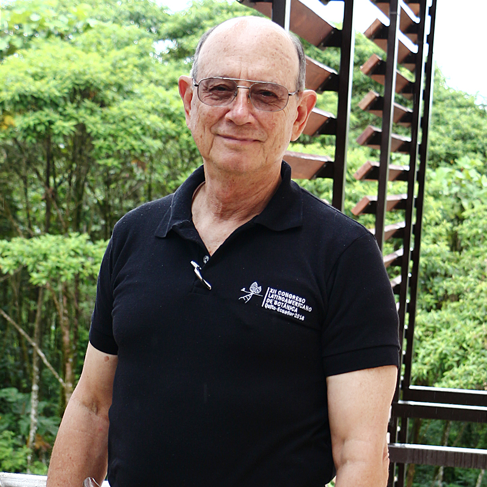
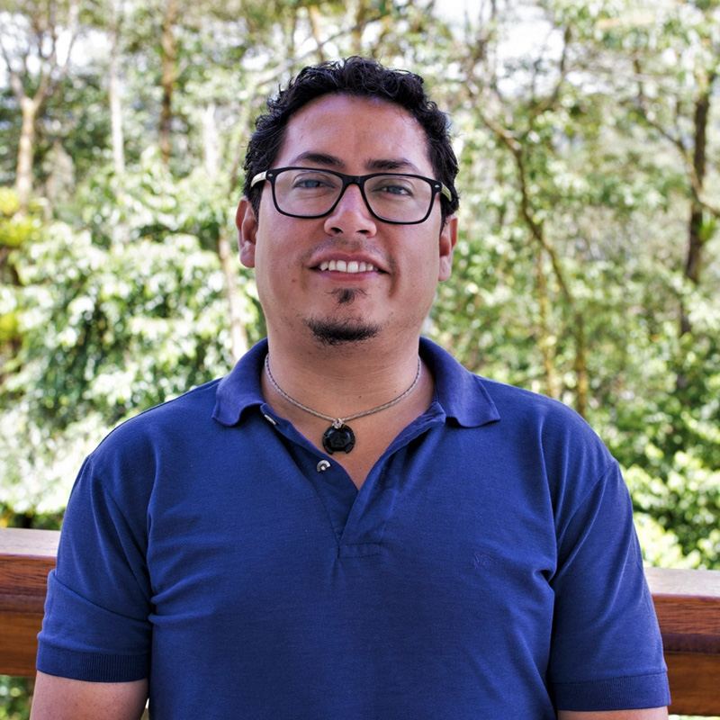
Francisco Villamarín
francisco.villamarin@ikiam.edu.ec
Soy ecólogo de ecosistemas de agua dulce. Mi principal tema de investigación está relacionado con el funcionamiento de las redes alimenticias en agua dulce. ¿Cómo los vertebrados acuáticos (peces, caimanes) son responsables por el flujo de nutrientes y energía a lo largo de la cadena alimenticia y a través de los límites de los paisajes?. Proyectos en los que estoy involucrado actualmente:
1. Caracterización de la fauna acuática y la estructura trófica de ríos y riachuelos en el piedemonte amazónico (Napo-Ecuador);
2. ¿Cómo los regímenes hidrológicos influencian los procesos ecológicos en ríos? (Región Andino-Amazónica);
3. ¿Cómo peces comercialmente importantes para habitantes locales (ej. paiche, bocachico) influencian el flujo de energía entre ecosistemas acuáticos? (Río Juruá, Brasil). (ver: https://fcovillamarin.wixsite.com/foodwebs)
Villamarín et al. 2018. Body Size is More Important than Diet in Determining Stable-Isotope Estimates of Trophic Position in Crocodilians. Scientific Reports. 8:2020 | DOI:10.1038/s41598-018-19918-6.
Villamarín, et al. 2017. Opportunistic Top Predators Partition Food Resources in a Tropical Freshwater Ecosystem. Freshwater Biology. 62(8), 1389-1400.
Villamarín et al. 2016. Temporal Uncoupling between Energy Acquisition and Allocation to Reproduction in a Herbivorous - Detritivorous Fish. Plos One , v. 11, p. e0150082
URL/Sitio Web personal (ResearchGate, ORCID, GoogleScholar): https://www.researchgate.net/profile/Francisco_Villamarin
Grupo de Investigación: Biogeografía y Ecología Espacial
Miguel Herrera Robledo
miguel.robledo@ikiam.edu.ec
Líneas: Ingeniería Ambiental > Nanotecnología > Fotocatálisis > Ciencia de membranas > Bioreactores con membrana > Control de biofouling.
Proyectos: Hi Water: Efficient and affordable water treatment technologies to minimise waterborne diseases. Patrocinador: EU - CELAC Health. Duración: 36 meses (a partir de 01/01/2018). Monto: 505 000 EURO.
Planes de investigación de pregrado:
#VirEzone. Foco: Virología de sistemas fluviales.
#BiOX. Foco: Inactivación de contaminantes emergentes a través de nanotec
Starr B. Tarabara V. Herrera - Robledo M. et al (2016) Coating porous membranes with a photocatalyst: Comparison of LbL self-assembly and plasma-enhanced CVD techniques. Journal of membrane science 514: 340-349.
Herrera - Robledo M. Noyola A (2015).The evolution of pore-blocking during the ultrafiltration of anaerobic effluent–like mixtures. Separation and Purification Technology 147: 172 - 178.
Herrera- Robledo et al (2011). Chitosan/albumin/CaCO3 as mimics for membrane bioreactor fouling. Chemosphere 84:191-198
Grupo de Investigación: Gestión Integrada de Recursos Hídricos y Acuáticos (GIRHA)
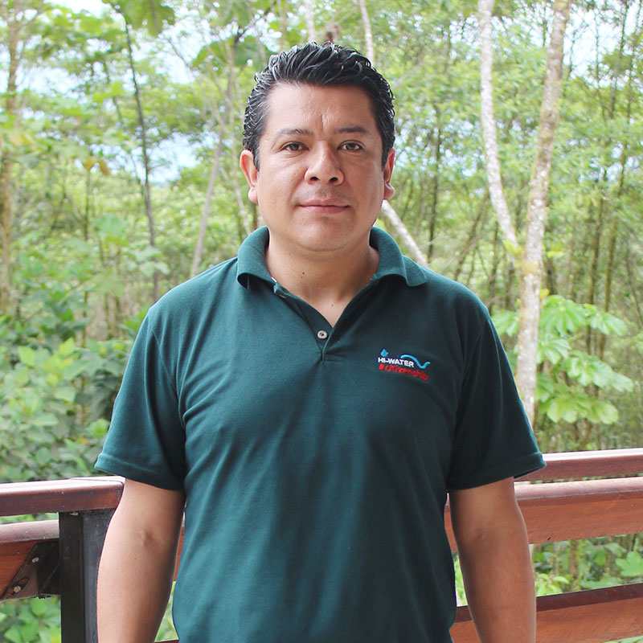
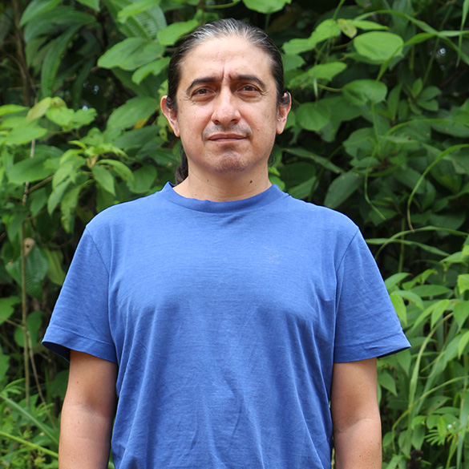
Sebastián Araujo
jose.araujo@ikiam.edu.ec
Dentro del Grupo de Investigación en Geofísica y Geotecnia GI2G de Ikiam tengo los siguientes proyectos donde pueden trabajar los estudiantes como parte de sus proyectos de fin de carrera:
1) Estudio sísmico y geodinámico de la cordilllera de Cutucú. Este proyecto es conjunto con otras universidades nacionales y extranjeras.
2) Tomografía sísmica en 2D de la falla de Cosanga en el río Bermejo.
3) Estudio mediante tomografía sísmica 2D del volumen de los depósitos piroclásticos al sur del volcán Sumaco.
4) Estudio de precursores sísmicos mediante sistemas complejos en el terremoto de Pedernales.
Araujo, S. (2016). Travel time tomography of the crust and the mantle beneath Ecuador from data of the national seismic network (Doctoral dissertation, Grenoble Alpes).
Métaxian, J. P., Araujo, S., Mora, M., & Lesage, P. (2003). Seismicity related to the glacier of Cotopaxi Volcano, Ecuador. Geophysical Research Letters, 30(9).
Araujo, S.. (2017). Computation of Nonextensivity Parameter in the Fragment-Asperity model for the Ecuadorian Seismic Catalog by a Bayesian Approach. Revista Cubana de Física, 34(2), 112-115.
URL/Sitio Web personal (ResearchGate, ORCID, GoogleScholar): https://orcid.org/0000-0002-9704-5779
Grupo de Investigación: Geofísica y Geotecnia
Carolina Proaño
carolina.proano@ikiam.edu.ec
Me interesa en el estudio bioquímico y molecular de los péptidos de anfibios, en particular de péptidos antimicrobiales y farmacológicamente activos. Adicionalmente, le interesa contribuir mediante investigación científica al entendimiento de la función biológica de estas moléculas en el contexto evolutivo del organismo.
Proyecto: Conservación de Anfibios y Uso Sostenible de sus Recursos Biológicos.
Cuesta, S., Arias de P. J, J., Gallegos, F., Proaño-Bolaños, C., Blasco-Zúñiga, A., Rivera, M., Meneses, L. 2018. Modelamiento molecular de la dermaseptina SP2 extraída de Agalychnis spurrelli. Infoanalítica. 7(1): 41-56. DOI: 10.26807/ia.v7i1.95
Proaño-Bolaños, C., Zhou, M., Chen, T., Shaw, C. 2018. Skin secretion transcriptome remains in chromatographic fractions suitable for molecular cloning. Analytical Biochemistry 564-565: 13-15. DOI:10.1016/j.ab.2018.10.006
Proaño-Bolaños, C., Lee, R., Zhou, M., Wang, L., Tapia E.E., Coloma, L.A., Chen, T., Shaw, C. 2017. Kazal-type Protease inhibitors from the skin secretion of the Splendid leaf frog, Cruziohyla calcarifer (Hylidae). Eupa Open Proteomics 15: 1-13. DOI: 10.1016/j.euprot.2017.02.001
Proaño-Bolaños, C., Zhou, M., Wang, L., Coloma, L.A., Chen, T., Shaw, C. 2016. Peptidomic approach identifies Cruzioseptins, a new family of antimicrobial peptides from Cruziohyla calcarifer. Journal of Proteomics 146: 1-13. DOI: 10.1016/j.jprot.2016.06.017
Armas-Freire, P., Trueba, G., Proaño-Bolaños, C., Levy, K., Zhang, L., Marrs, C., Cevallos, W., Eisenberg, J. 2015. Unexpected distribution of the fluoroquinolone-resistance gene qnrB in Escherichia coli isolates from different human and poultry origins in Ecuador. International Microbiology 18(2): 85-90. DOI: 10.2436/20.1501.01.237.
URL/Sitio Web personal (ResearchGate, ORCID, GoogleScholar): https://www.researchgate.net/profile/Carolina_Proano-Bolanos
Grupo de Investigación: Química Aplicada a Biomoléculas

Yanet Villasana
yanet.villasana@ikiam.edu.ec
Valorización de biomasa, biomateriales, catálisis, bioenergía
URL/Sitio Web personal (ResearchGate, ORCID, GoogleScholar): https://www.researchgate.net/profile/Yanet_Villasana
Grupo de Investigación: Biomasa
Leopoldo Naranjo Briceño
leopoldo.naranjo@ikiam.edu.ec
Avance y desarrollo de la ciencia y la tecnología se han centrado fundamentalmente en el uso racional de la diversidad microbiana (con especial énfasis en bacterias y hongos), sus componentes moleculares, productos enzimáticos y/o metabólicos para el desarrollo de productos biotecnológicos con alto valor agregado para obtener bienes y servicios orientados a:
i) la salud humana,
ii) la agricultura orgánica,
iii) el desarrollo sustentable de la industria petrolera,
iv) el desarrollo de nuevas fuentes de bioenergía y,
v) la biocatálisis y biorremediación ambiental.
Proyectos en marcha:
- Fortalecimiento del sistema de producción artesanal de hongos comestibles como alternativa de subsistencia para las comunidades indígenas establecidas en el Parque Nacional Sumaco Napo-Galeras, Ecuador (Seguridad Alimentaria. Actualmente 11 Estudiantes).
- Creación de la Unidad de Identificación Molecular de Agentes Infecciosos como Apoyo Médico Científico al Hospital “José María Velasco Ibarra” ubicado en la ciudad de Tena, Provincia de Napo, Ecuador (Salud en el contexto amazónico.
Actualmente 5 Estudiantes).
URL/Sitio Web personal (ResearchGate, ORCID, GoogleScholar): http://www.researchgate.net/profile/Leopoldo_Naranjo
Grupo de Investigación: Microbiología Aplicada
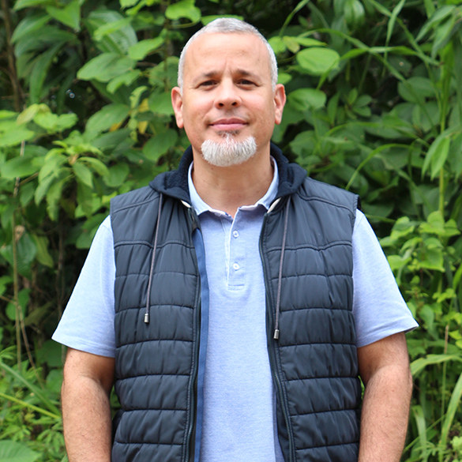
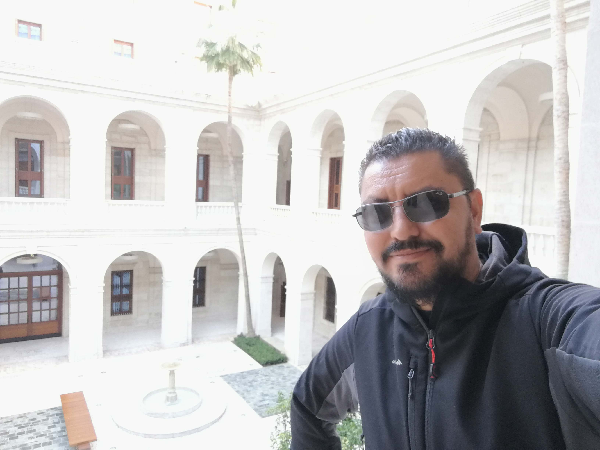
H. Mauricio Ortega Andrade
mauricio.ortega@ikiam.edu.ec
Mis líneas de investigación se enfocan al estudio de:
1) Cambio climático y otras amenazas sobre la distribución de las especies / ecosistemas amenazados.
2) Biogeografía, evolución y conservación de la biodiversidad en el Neotrópico.
3) Especies invasoras y plagas relacionadas con la diversidad en ecosistemas neotropicales. Los proyectos que actualmente lidero son:
1) Código de barras genético en anfibios y reptiles de la R. B. Colonso Chalupas.
2) Monitoreo biológico con ADN ambiental en sistemas acuáticos.
3) Taxonomía y sistemática de anfibios y reptiles Amazónicos.
Ortega Andrade, H. M., O. R. Rojas-Soto, A. Espinosa de los Monteros, J. Valencia, M. Read y S. Ron. 2017. Revalidation of Pristimantis brevicrus (Anura, Terrarana) with comments on cryptic diversity in a widespread Amazonian direct-developing frog. The Herpetological Journal 26 (2017): 87-103.
Ortega-Andrade, H. M., D. A. Prieto-Torres, I. Gómez-Lora y D. J. Lizcano. "Ecological and Geographical Analysis of the Distribution of the Mountain Tapir (Tapirus pinchaque) in Ecuador: Importance of Protected Areas in Future Scenarios of Global Warming". PLoS One (2015) 10: e0121137.
Ortega-Andrade, H. M., O. R. Rojas-Soto, J. H. Valencia, A. Espinosa de los Monteros, J. J. Morrone, S. R. Ron y D. C. Cannatella. "Insights from integrative systematics reveal cryptic diversity in Pristimantis Frogs (Anura: Craugastoridae) from the upper Amazon basin". PLoS One (2015) 10: e0143392.
Grupo de Investigación: Biogeografía y Ecología Espacial
Jonathan Liria
jonathan.liria@ikiam.edu.ec
Sistemática y biogeografía de artrópdos de importancia médica-veterinaria y forense. Bioecología e insectos vectores de vius y patógenos. Métodos cuantitativos de cuantificación fenotípica.
1) High mosquito diversity in an Amazonian village of Ecuador, surrounded by a Biological Reserve, using a rapid assessment method .
2) New kissing bug (Hemiptera: Reduviidae: Triatominae) records from Napo and Morona-Santiago provinces with distribution updates in Ecuador.
3) Alphaviruses in Latin America and the introduction of chikungunya virus.
URL/Sitio Web personal (ResearchGate, ORCID, GoogleScholar): https://www.scopus.com/authid/detail.uri?authorId=6507279413
Grupo de Investigación: Biogeografía y Ecología Espacial
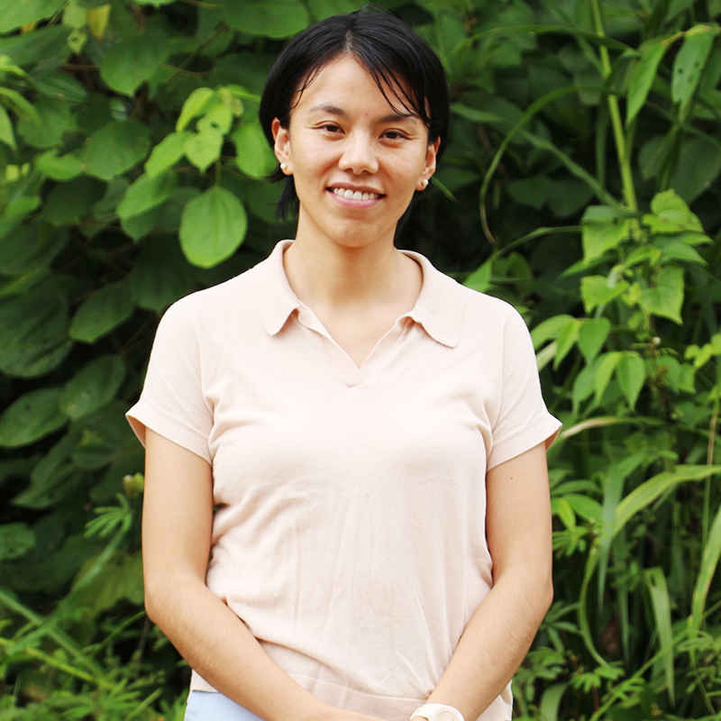
Ery Odette Fukushima
ery.fukushima@ikiam.edu.ec
Mi trabajo se centra en elucidar la biosíntesis a nivel de gen/enzima de ciertos metabolitos especializados; haciendo uso de herramientas en biotecnología, química analítica e ingeniería metabólica. Con esta información se trata de generar una alternativa a la extracción directa; a través de la producción de estas moléculas en otros organismos de más fácil cultivo y costo-eficientes.
Los proyectos en los que trabajo son:
1) Crear el grupo iGEM (international Genetic Engineering Machine) Ikiam,
2) Red de plantas medicinales en la amazonía,
3) Biología sintética aplicada a la producción de metabolitos especializados
1. Suzuki H.*, Fukushima E.O.*, Seki H., Muranaka T. (2018) Comparative analysis of CYP716A subfamily enzymes for the heterologous production of C-28 oxidized triterpenoids in transgenic yeast. Plant Biotechnol. 35:131-139
2. Vo N. N. Q., Fukushima E.O., Muranaka T. (2017) Structure and hemolytic activity relationships of triterpenoid saponins and sapogenins. J. Nat. Med. 71:50-58
3. Fukushima E.O., Seki H., Ohyama K., Ono E., Umemoto N., Mizutani M., Saito K., Muranaka T. (2011) CYP716A subfamily members are multifunctional oxidases in triterpenoid biosynthesis. Plant Cell Physiol. 52: 2050-2061. (138 citations, impact factor: 4.319)
URL/Sitio Web personal (ResearchGate, ORCID, GoogleScholar): https://www.researchgate.net/profile/Ery_Fukushima,https://scholar.google.com/citations?user=OFma6yoAAAAJ&hl=en,https://orcid.org/0000-0003-4099-4292
Grupo de Investigación: Química Aplicada a Biomoléculas
Bruno Conicelli
bruno.conicelli@ikiam.edu.ec
Mi línea de investigación se focaliza en algunos problemas ambientales críticos:
a) agotamiento del acuífero (generalmente asociado con las tasas de retiro más altas que la recarga durante largos períodos de tiempo);
b) aumento prohibitivo de los costes de bombeo de aguas subterráneas (profundización de pozos, sustitución de bombas y aumento del gasto energético);
c) impactos en ecosistemas sensibles (reducción del flujo de base a ríos, lagos, humedales y flora y fauna asociadas);
d) inducción de contaminación de otros acuíferos y salinización de acuíferos costeros;
e) inequidad social (asociada a la explotación a través de grandes pozos, reduciendo la disponibilidad de agua a los pequeños usuarios); y
f) inestabilidad de la tierra, hundimientos y problemas geotécnicos.
Estimating groundwater recharge using GIS-based distributed water balance model in an environmental protection area in the city of Sete Lagoas (MG), Brazil
Groundwater resources in Brazil: a review of possible impacts caused by climate change
Solo e águas subterrâneas contaminadas pela deposição de resíduos sólidos urbanos: o caso do Vazadouro de Tatuí (SP)
URL/Sitio Web personal (ResearchGate, ORCID, GoogleScholar): https://scholar.google.com.ec/citations?user=dAx7oWMAAAAJ&hl=es
Grupo de Investigación: Gestión Integrada de Recursos Hídricos y Acuáticos (GIRHA)


Jaime Martí Herrero
jaime.marti@ikiam.edu.ec
Realizo investigación aplicada en energías renovables, principalmente en biodigestores como sistemas de tratamiento de residuos orgánicos con aprovechamiento de energía (biogás) y agrícola (producción de biol). Actualmente coordino dos proyectos internacionales: uno financiado por Naciones Unidas para el desarrollo de un programa nacional de biodigestores en Ecuador, y otro financiado por el Instituto Wuppertal (Alemania) para el desarrollo e implementación de plantas de tratamiento de aguas residuales mediante biodigestores en comunidades rurales amazónicas.
Trabajo también en modelos de transferencia de calor, arquitectura bioclimática, pico del petróleo y tecnologías apropiadas.
Martí-Herrero, J., Soria-Castellón, G., Diaz-de-Basurto, A., Alvarez, R., & Chemisana, D. (2019). Biogas from a full scale digester operated in psychrophilic conditions and fed only with fruit and vegetable waste. Renewable Energy, 133, 676-684.
Martí-Herrero, J., Alvarez, R., & Flores, T. (2018). Evaluation of the low technology tubular digesters in the production of biogas from slaughterhouse wastewater treatment. Journal of cleaner production, 199, 633-642.
Perrigault, T., Weatherford, V., Martí-Herrero, J., & Poggio, D. (2012). Towards thermal design optimization of tubular digesters in cold climates: A heat transfer model. Bioresource technology, 124, 259-268.
Martí-Herrero, J., Soria-Castellón, G., Diaz-de-Basurto, A., Alvarez, R., & Chemisana, D. (2019). Biogas from a full scale digester operated in psychrophilic conditions and fed only with fruit and vegetable waste. Renewable Energy, 133, 676-684.
Martí-Herrero, J., Alvarez, R., & Flores, T. (2018). Evaluation of the low technology tubular digesters in the production of biogas from slaughterhouse wastewater treatment. Journal of cleaner production, 199, 633-642.
Perrigault, T., Weatherford, V., Martí-Herrero, J., & Poggio, D. (2012). Towards thermal design optimization of tubular digesters in cold climates: A heat transfer model. Bioresource technology, 124, 259-268.
Martí-Herrero, J., Soria-Castellón, G., Diaz-de-Basurto, A., Alvarez, R., & Chemisana, D. (2019). Biogas from a full scale digester operated in psychrophilic conditions and fed only with fruit and vegetable waste. Renewable Energy, 133, 676-684.
Martí-Herrero, J., Alvarez, R., & Flores, T. (2018). Evaluation of the low technology tubular digesters in the production of biogas from slaughterhouse wastewater treatment. Journal of cleaner production, 199, 633-642.
Perrigault, T., Weatherford, V., Martí-Herrero, J., & Poggio, D. (2012). Towards thermal design optimization of tubular digesters in cold climates: A heat transfer model. Bioresource technology, 124, 259-268.
URL/Sitio Web personal (ResearchGate, ORCID, GoogleScholar): https://www.researchgate.net/profile/Jaime_Marti-Herrero
Grupo de Investigación: Biomasa
Daniel Antonio Coronel Navarro
daniel.coronel@ikiam.edu.ec
Ingeniero en Biotecnología de los Recursos Naturales, con 2 años de experiencia en Laboratorio de microbiología, en manejo de biorreactores y generación de biomasa microbiana, prácticas en el sector de control de calidad en industria alimenticia y licorera, amplio manejo de equipos de laboratorio microbiológico y de análisis. 6 años de experiencia en Instituciones de Educación Superior en el campo administrativo y gestión. Coordinador de prácticas de proyectos de investigación en la Universidad Politécnica Salesiana y Técnico en Dirección de Proyectos Nivel D de la Universidad Politécnica de Madrid.
Coba, P., D. Coronel, K. Verdugo, M. Paredes, E. Yugsi y L. Huachi. 2012. Estudio etnobotá- nico del mortiño (Vaccinium floribundum) como alimento ancestral y potencial alimento funcional. La Granja. Vol. 16(2): 5-13. ISSN: 1390-3799.
Huachi, L., E. Yugsi, M.F. Paredes, D. Coronel, K. Verdugo y P. Coba Santamaría. 2015. Desarrollo de la pitahaya (Cereus sp.) en Ecuador. La Granja: Revista de Ciencias de la Vida. Vol. 22(2): 50-58. ISSNp: 1390-3799, ISSNe: 1390-8596.
URL/Sitio Web personal (ResearchGate, ORCID, GoogleScholar): https://www.researchgate.net/profile/Daniel_Coronel4
Grupo de Investigación: Población y Ambiente
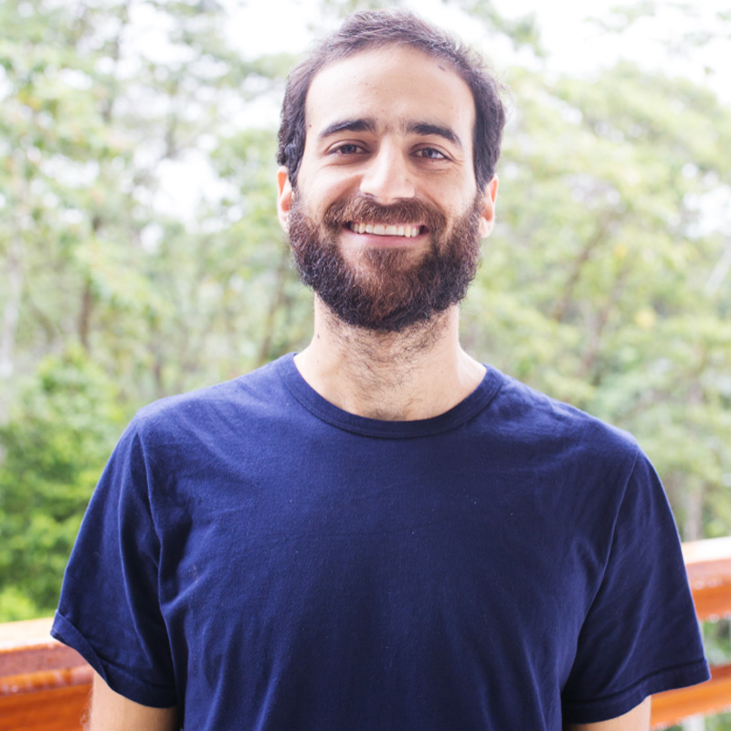
Gabriel Massaine Moulatlet
gabriel.massaine@ikiam.edu.ec
- Temas: Ecología de comunidades; Ecología Vegetal; Ecohidrología
- líneas: Diversidad de helechos del corridor Andes-Amazonia; Fragmentación de Bosques Amazónicos; Relaciones Hidrológicas y Edáficas en bosques Andino-Amazónicos
Moulatlet, G. M., Zuquim, G., Figueiredo, F. O. G., Lehtonen, S., Emilio, T., Ruokolainen, K., & Tuomisto, H. (2017). Using digital soil maps to infer edaphic affinities of plant species in Amazonia: Problems and prospects. Ecology and evolution, 7(20), 8463-8477.
Moulatlet, G. M., Rennó, C. D., Costa, F. R. C., Emilio, T., & Schietti, J. (2015). Mapping hydrological environments in central Amazonia: ground validation and surface model based on SRTM DEM data corrected for deforestation. Earth System Science Data, 7, 29-34.
Moulatlet, G. M., Costa, F. R., Rennó, C. D., Emilio, T., & Schietti, J. (2014). Local hydrological conditions explain floristic composition in lowland Amazonian forests. Biotropica, 46(4), 395-403.
URL/Sitio Web personal (ResearchGate, ORCID, GoogleScholar): https://scholar.google.com/citations?hl=es&user=o4dBz6MAAAAJ&view_op=list_works&sortby=pubdate
Grupo de Investigación: Biogeografía y Ecología Espacial
Sara Álvarez Solas
sara.alvarez@ikiam.edu.ec
Mi línea de investigación se centra en el campo del comportamiento, las relaciones sociales y factores ecológicos de las especies animales, así como el estudio de la integración e importancia de la fauna dentro los ecosistemas para planes de manejo y conservación. Actualmente mis proyectos/líneas son
1) interacción palma-animal a través del uso de cámaras trampa;
2) sistema nacional de monitoreo de fauna;
3) estudio del comportamiento y selección de hábitat de Ranitomeya variabilis;
4) planes de acción y protocolos de manejo y liberación de especies animales en centros de rescate y áreas intervenidas;
5) programas de educación ambiental: efecto de animales domésticos y programa de conservación de murciélagos;
6) estudio de psicología humana.
Mauritia flexuosa, a hyperkeystone species worth conserving.
Working Together Towards One Goal: Results of the First Primate Census in Western Ecuador
Conservation Action Plan for the Ecuadorian Primates: process and priorities
URL/Sitio Web personal (ResearchGate, ORCID, GoogleScholar): https://www.researchgate.net/profile/Sara_Alvarez_Solas
Grupo de Investigación: Ecosistemas Tropicales y Cambio Global
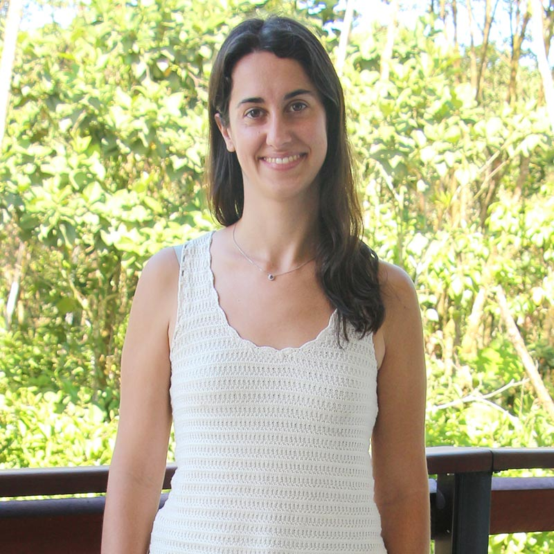
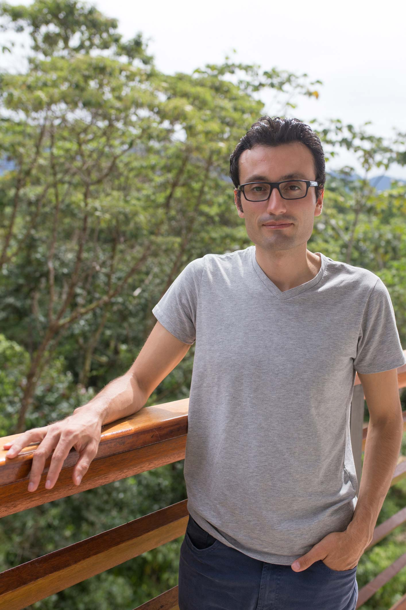
Edgar Fabian Espitia Sarmiento
edgar.espitia@ikiam.edu.ec
Mi línea de investigación es la modelación hidrológica a partir del desarrollo e implementación conceptual, matemática y numérica de modelos lluvias escorrentía agregados o distribuidos espacialmente a diferentes escalas temporales (minuto, diarias, mensuales y anuales). Actualmente mis proyectos son
i) Sistema de alerta temprana de inundaciones para Tena,
ii) Monitoreo ecohidológico de la cuenca alta del río Tena,
iii) instrumentación hidromeotrológica de bajo costo usando tecnologías libres y
iv) Calidad del Agua.
Grupo de Investigación: Gestión Integrada de Recursos Hídricos y Acuáticos (GIRHA)
Jorge Ronny Espín Campos
ro_nyes.ec@hotmail.com
Mis líneas de investigación se enfocan:
-Análisis de estabilidad de taludes y laderas.
-Zonificación geotécnica y sísmica.
URL/Sitio Web personal (ResearchGate, ORCID, GoogleScholar): https://www.researchgate.net/profile/Jorge_Espin
Grupo de Investigación: Geofísica y Geotecnia

Hernán G. Villarraga
hernan.villarraga@ikiam.edu.ec
- Interacción entre la población humana y el ambiente; cuyo objetivo es evaluar el papel de la dinámica de la población (tamaño, distribución, composición y cambio) y otros factores con respecto a las tendencias predominantes en cuestiones como la urbanización; la ocupación, uso y deterioro del suelo; el suministro de agua; la deforestación, entre otras. Así como la incidencia de factores ambientales en el bienestar humano (poblaciones vulnerables con respecto a problemas ambientales específicos, como contaminación, problemas de suministro de agua, deforestación, morbilidad, mortalidad).
Villarraga, H. G. (2018), "Convergencia de la fecundidad en los países de América Latina: un análisis a partir de sus Divisiones Administrativas Mayores (DAM)", en L. Simpson & L. González (eds.), ¿Convergencia demográfica? Análisis comparativo de las tendencias demográficas subnacionales en América Latina y el Caribe (pp. 209-239). Santiago: ALAP.
Villarraga, H. G. y Módenes, J. A. (2017). "Delimitación y jerarquización de áreas metropolitanas: un ejercicio de adaptación y aplicación para el caso colombiano", en Papers Revista de Sociología, Vol. 102, Nº 4, pp. 851-883. doi: http://dx.doi.org/10.5565/rev/papers.2413.
Villarraga, H. G., Sabater, A. y Módenes, J. A. (2014). "Modelling the Spatial Nature of Household Residential Mobility within Municipalities in Colombia", en Applied spatial analysis and policy, Vol. 7, Nº 3, pp. 203-223. doi: https://doi.org/10.1007/s12061-014-9101-7.
URL/Sitio Web personal (ResearchGate, ORCID, GoogleScholar): https://www.researchgate.net/profile/Hernan_Villarraga
Grupo de Investigación: Población y Ambiente
Marco Simbaña
marco.simbana@ikiam.edu.ec
Análisis de la relación Geobiodiversidad en el volcán Sumaco. Proyecto Geoparque Napo Sumaco. Laboratorio de estudios geoecológicos Pungarayacu.
URL/Sitio Web personal (ResearchGate, ORCID, GoogleScholar): https://orcid.org/0000-0003-2974-3839
Grupo de Investigación: No adscrito a un Grupo de Investigación
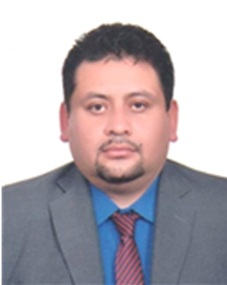
Luis Flores
luis.flores@ikiam.edu.ec
Automatización, sistemas de control e instrumentación en Electrónica. Actualmente, en TICs, metodologías vinculadas a la educación.
-Variación de la autonomía en el aprendizaje, en función de la gestión del conocimiento, para disminuir en los alumnos los efectos del aislamiento
-Educación continua, gestor del aprendizaje y conocimiento en la educación superior
URL/Sitio Web personal (ResearchGate, ORCID, GoogleScholar): https://orcid.org/0000-0003-1301-6880
Grupo de Investigación: No adscrito a un Grupo de Investigación
Mariana Vellosa Capparelli
mariana.capparelli@ikiam.edu.ec
1. Efectos fisiológicos, bioquímicos y moleculares de los contaminantes ambientales en los organismos acuáticos;
2. Estudio ecológico de los crustáceos de Ecuador: crustáceos como indicadores de la salud el ecosistema
3. Fisiología Osmorregulória de Crustáces de agua dulce y marinos
4. Termorregulación in invertebrados
5. Efectos de los cambios globales sobre invertebrados
6. Ensayos ecotoxicológicos para monitorear el ecosistema acuático
7. Determinación de contaminantes en ecosistemas acuáticos
1. Combined effects of temperature and copper on oxygen consumption and antioxidant responses in the mudflat fiddler crab Minuca rapax (Brachyura, Ocypodidae). MV Capparelli, IC Bordon, G Araujo, PK Gusso-Choueri, ... Comparative Biochemistry and Physiology Part C: Toxicology & Pharmacology 2019
2. Seasonal environmental parameters influence biochemical responses of the fiddler crab Minuca rapax to contamination in situ. MV Capparelli, PK Gusso-Choueri, DM de Souza Abessa, JC McNamara Comparative Biochemistry and Physiology Part C: Toxicology & Pharmacology 2019.
3. Effects of waterborne copper delivered under two different exposure and salinity regimes on osmotic and ionic regulation in the mudflat fiddler crab, Minuca rapax (Ocypodidae) MV Capparelli, JC McNamara, M Grosell Ecotoxicology and environmental safety 143, 201-209
URL/Sitio Web personal (ResearchGate, ORCID, GoogleScholar): https://www.researchgate.net/profile/Mariana_Capparelli
Grupo de Investigación: Gestión Integrada de Recursos Hídricos y Acuáticos (GIRHA)
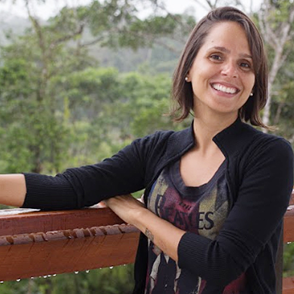
Corina Campos
corina.campos@ikiam.edu.ec
Mis áreas de interés son las siguientes: la sedimentología, la estratigrafía, el riesgo sísmico y riesgo geológico, la prospección de rocas para la búsqueda de hidrocarburos y el análisis de cuencas sedimentarias. Actualmente estoy trabajar en un proyecto de investigación titulado: Análisis de la Huellas de Eventos Catastróficos, Climáticos y Antropogénicos en el Registro Sedimentario, utilizando un Enfoque Multidisciplinario. Estoy trabajando actualmente en las terrazas del rio Tena, Pano, Pashimbi, así como, en con datos recolectados a nivel mundial.
CAMPOS, C., BECK, C., CROUZET, C., DEMORY, F., VAN WELDEN, A., ERIS, K., (2013). "Deciphering hemipelagites from homogenites through anisotropy of magneticrnsusceptibility. Paleoseismic implications (Sea of Marmara and Gulf of Corinth)". Sedimentary Geology, Vol. 292, pp. 1 - 14.
BECK, C., CAMPOS, C., ERIS, K., CAGATAY, MERCIER DE LEPINAY, JOUANNE, F., (2015). “Estimation of successive coseismic vertical offsets using coeval sedimentary events - application to the southwestern limit of the Sea of Marmara’s Central Basin (North Anatolian Fault)". Nat. Hazards Earth Syst. Sci., 15, 1–13.
CAMPOS, C., GUZMAN, O., PILLOUD, A., TORO, M., UZCATEGUI, R., CABRERA, A. (2010). "Gravely and Sandy Facies of Rio Guache Formation, Venezuelan Andes: Evidences of Transformation of Gravity Flows in Deep Marine Water" in R. M. Slatt and C. Zavala, eds., Sediment transfer from shelf to deep water—Revisiting the delivery system: AAPG Studies in Geology 61, 117–128.
URL/Sitio Web personal (ResearchGate, ORCID, GoogleScholar): https://www.researchgate.net/profile/Corina_Campos3
Grupo de Investigación: Geofísica y Geotecnia
Amanda Cevallos
amanda.cevallos@ikiam.edu.ec
Mi investigación se centra en Química Aplicada de Moléculas Orgánicas Funcionales, en el desarrollo de biomateriales, modificación de biomoléculas para obtener sensores fluorescentes, aislamiento, caracterización y elucidación de nuevas moléculas provenientes de productos naturales (NP), síntesis y caracterización de moléculas orgánicas funcionales (macromoléculas). Actualmente mis proyectos son:
1) Aislamiento de moléculas con propiedades antibióticas a partir de extractos de NP,
2) Aislamiento de moléculas con potencial uso en sensores a partir de extractos de NP, aplicado a biotecnología.
Grupo de Investigación: No adscrito a un Grupo de Investigación
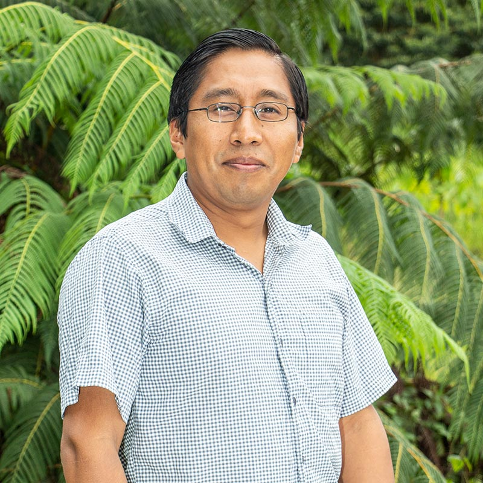
Byron Maza
byron.maza@ikiam.edu.ec
Mi línea de investigación es la mitigación al cambio climático. Actualmente ejecuto dos proyectos de investigación:
1. Almacenamiento de Carbono en tres tipos de bosque de la Región Amazónica Ecuatoriana, provincia de Napo,
2. Identificación y manejo de fuentes semilleras de especies forestales para garantizar la provisión de material genético de calidad y procedencia en la producción de plántulas.
Grupo de Investigación: Biogeografía y Ecología Espacial
Caroline Bacquet
caroline.bacquet@ikiam.edu.ec
Mi área de investigación es la epigenética aplicada a problemáticas ambientales, evolutivas y de conservación. Actualmente tengo un proyecto sobre los cambios epigenéticos inducidos en mariposas Heliconius por cambios ambientales como temperatura, altitud, exposición a ciertas moléculas químicas, y presencia de folato en la dieta. En el futuro quisiera aplicar la misma técnica en tilapias, para utilizarlas como sensores biológicos en ecosistemas acuáticos. Además de las técnicas moleculares, utilizo el tejido como herramienta para realizar actividades educativas y despertar la sensibilidad acerca de los temas en estudio.
Grupo de Investigación: Insectario Científico
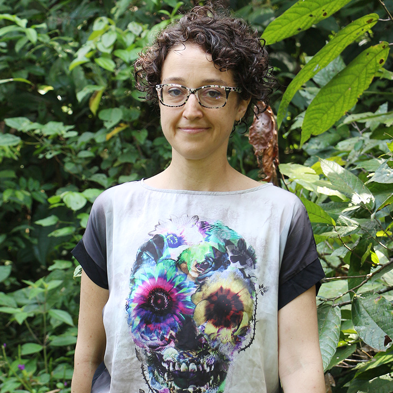
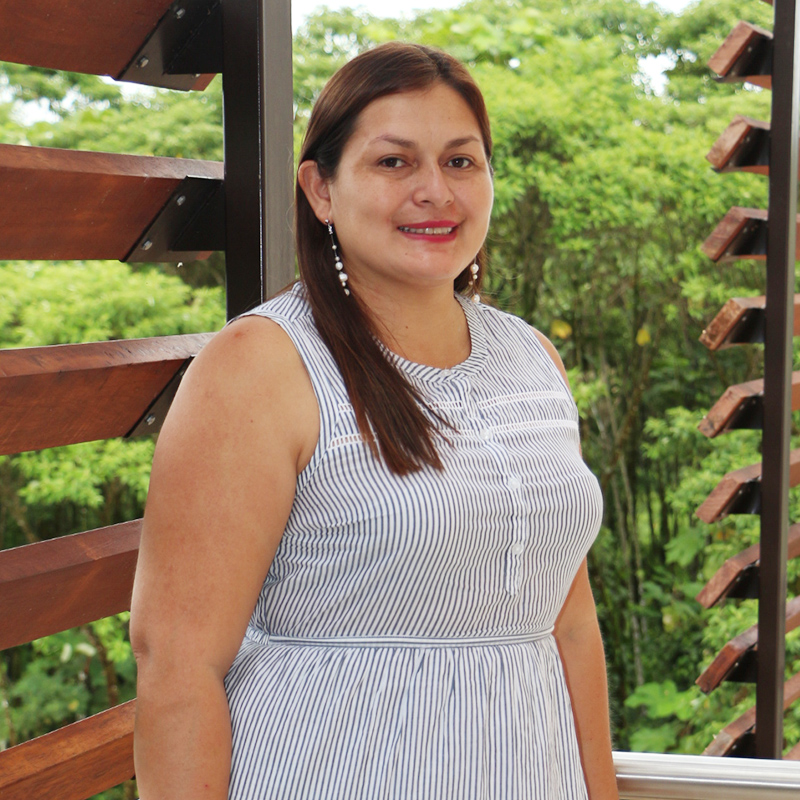
Cecilia Rodríguez
cecilia.rodriguez@ikiam.edu.ec
Ictioparasitología; Estudio de Angiostrongylus cantonensis en caracol africano y otros molúscus de la región amazónica; Filogenia ictícola; Enfermedades parasitarias; Los parásitos como bioindicadores; Ecología Parasitaria.
Grupo de Investigación: Granja Experimental Shitig
Fabrizio Logiurato
fabrizio.logiurato@ikiam.edu.ec
Mis intereses científicos son: Physics Education en Física General y Moderna (aplicación de nuevas tecnologías a la educación), Fundamentos de la Física Cuántica (Quantum Entanglement y significado físico de los postulados de la Mecánica Cuántica), Física Aplicada al Medio Ambiente y Fuentes Alternativas de Energía (Energía Solar Fotovoltaica y Termodinámica, Micro-hidroeléctrico).
Grupo de Investigación: No adscrito a un Grupo de Investigación
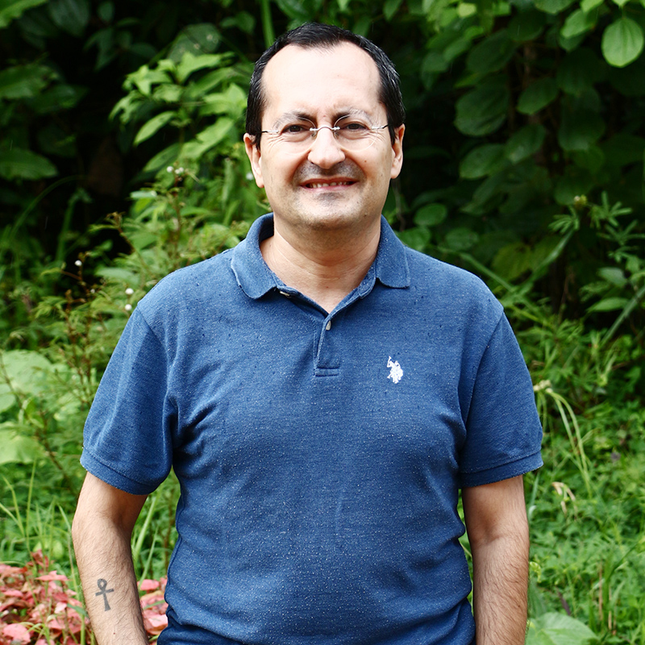
Gabriela Salazar
noroska.salazar@ikiam.edu.ec
Químico analítico con enfasis en cromatografia gaseosa convencional y bidimensional, cromatografía líquida, espectrometria de masas simple y tandem. Actuamente trabajo con la caracterización quimica de metabolitos secundarios en productos naturales a fin de identificar nuevas moleculas con posible actividad biologica ademas de la procura de nuevos biomarcadores por técnicas quimiometricas de análisis. Adicionalmente trabajo en la implementación de nuevas técnicas analiticas cromatograficas de análisis quimico moderno.
Grupo de Investigación: Productos Naturales
Jan Spengler
jan.spengler@ikiam.edu.ec
Asociado al Proyecto HiWater (EULAC, Miguel Herrera):
Formacion de Nanoparticulas de Bismuto fotoactivos por Productos Naturales
Sintetizamos compuestos organo-bismuto cuales son investigados por su actividad fotocatalitica para procesos de purificacion de agua
Tecnicas de precipitacion y tecnicas de inmobilizacion
URL/Sitio Web personal (ResearchGate, ORCID, GoogleScholar): https://orcid.org/0000-0003-1881-8719
Grupo de Investigación: No adscrito a un Grupo de Investigación
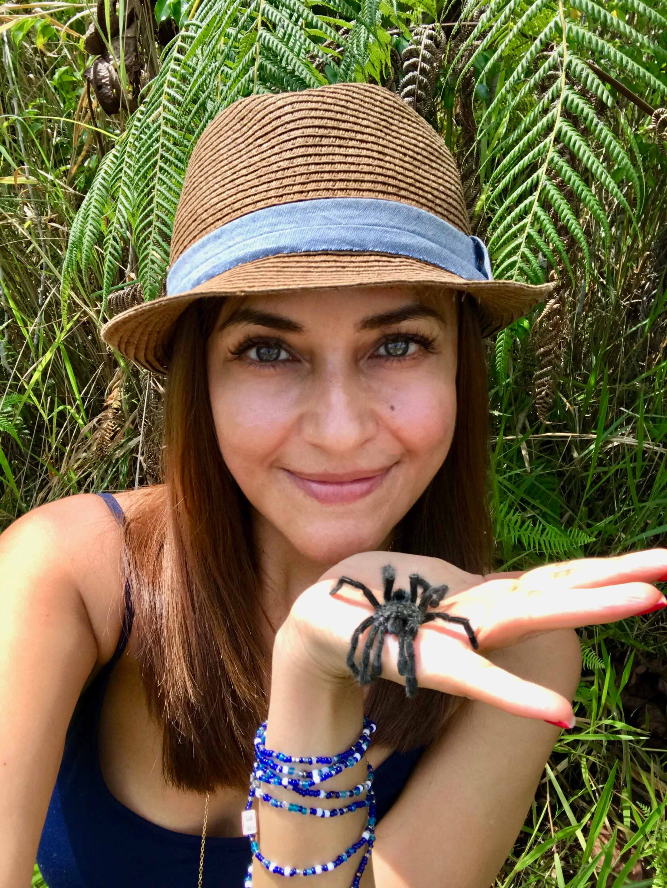
Jennifer Guevara
jennifer.guevara@ikiam.edu.ec
Mi investigación se enfoca en la ecología y la evolución del comportamiento social de las arañas sociales, y en estudios de la diversidad de insectos tropicales. Mis proyectos actuales tratan de entender los procesos ecológicos que influyen en la diversidad local de las arañas sociales a nivel de las comunidades, los factores ambientales que explican los patrones geográficos de las arañas sociales, y los patrones de diversidad de artrópodos a lo largo de gradientes ambientales. Para esto, uso experimentos de campo, modelos de nichos ecológicos, y una variedad de métodos cuantitativos.
Grupo de Investigación: No adscrito a un Grupo de Investigación
Jorge Celi
jorge.celi@ikiam.edu.ec
Busco entender los patrones de diversidad y el funcionamiento de los ecosistemas y sus servicios ecosistémicos, para fortalecer su gobernanza y apoyar a su conservación. En ese contexto estudio la ecología, biogeoquímica, y ecohidrología de ecosistemas acuáticos, los impactos de las actividades humanas y el cambio climático sobre ellos, para dar alternativas de manejo. Adicionalmente, estudio escarabajos del estiércol para entender patrones de diversidad y el estado de conservación de ecosistemas terrestres. Colaboro en múltiples proyectos bajo grupos de investigación nacionales e internacionales.
Grupo de Investigación: Gestión Integrada de Recursos Hídricos y Acuáticos (GIRHA)
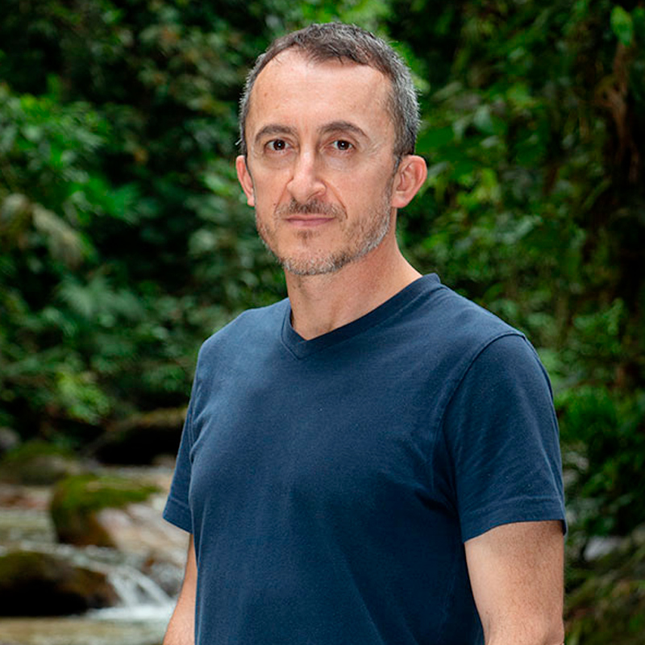
José Rafael de Almeida
rafael.dealmeida@ikiam.edu.ec
Mis lineas de investigaciones se centran en el aislamiento y la caracterización estructural y farmacológica de proteínas y péptidos de venenos de serpientes; principalmente, en la caracterización de un grupo de proteínas multifuncionales llamado fosfolipasas A2 . Otro de mis enfoques de investigación ha sido la búsqueda y estudio de inhibidores sintéticos y naturales para estas toxinas. También, investigamos las aplicaciones terapéuticas de péptidos catiónicos sintéticos derivados de la estructura primaria de las toxinas , con enfoque en la evaluación de las actividades antitumorales y antibacterianas.
Grupo de Investigación: No adscrito a un Grupo de Investigación
Juan Francisco Tlapanco
juan.tlapanco@ikiam.edu.ec
Geometría diferencial aplicada a ciencias de la vida y la tierra, Fortalecimiento de la formación científico- tecnológica
Grupo de Investigación: No adscrito a un Grupo de Investigación
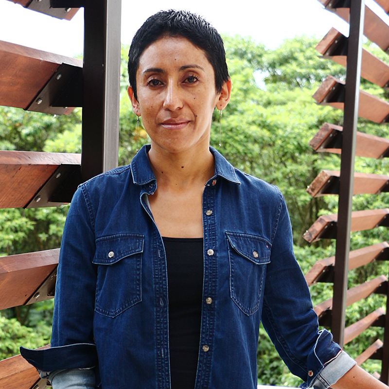
Liliana Alexandra Pila Quinga
liliana.pila@ikiam.edu.ec
PhD y master en Ciencias, con énfasis en Recursos Genéticos Vegetales por la Universidad Federal de Santa Catarina, Brasil. Ingeniera agrónoma por la Escuela Superior Politécnica de Chimborazo, Ecuador. Experiencia como investigadora en el área de Biotecnología Vegetal. Principales líneas de investigación: fisiología, anatomía y bioquímica del desarrollo de plantas, cultivo de células y tejidos vegetales, micropropagación de plantas, embriogénesis somática, morfogénesis in vitro y diversidad de los recursos genéticos vegetales. Proyecto: Estado de la diversidad de los recursos genéticos vegetales de la amazonia ecuatoriana.
Grupo de Investigación: No adscrito a un Grupo de Investigación
Luis Maisincho
luis.maisincho@ikiam.edu.ec
Evaluar el impacto del cambio climático sobre los glaciares tropicales Andinos y ecosistemas de alta montaña. En Ecuador los proyectos en ejecución son a) monitoreo hidro-meteorológico y glaciológico en la zona del Antisana, b) evaluar el aporte glaciar en la producción de caudales, c) estudio de los procesos físicos que ocurren en la interfaz glaciar-atmósfera y d) medir el gradiente de precipitación y acumulación en cuencas de alta montaña.
Grupo de Investigación: No adscrito a un Grupo de Investigación
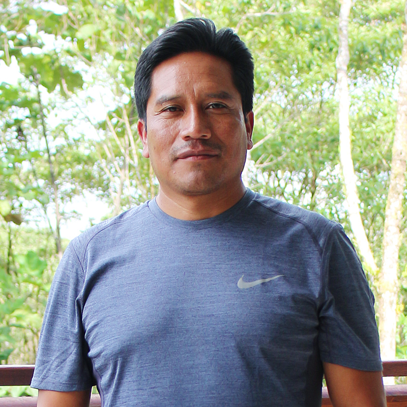
Maria Gabriela Zurita Benavides
mariagabriela.zurita@ikiam.edu.ec
Mi área de investigación es la etnobiología, estudio de la relación entre las sociedades humanas y el ambiente. En un marco de investigación interdisciplinaria me intereso a los sistemas agrícolas tradicionales y su principal uso, la alimentación, comprender las prácticas, representaciones y conocimientos de las poblaciones indígenas y colonas de la Amazonía, como fundamento para discernir las motivaciones del manejo de los recursos naturales y de consumo cotidiano. Actualmente soy la directora del proyecto “Comunidad, Comida y Salud” que busca concebir material de educación alimentaria responsable, es decir con el consumo de productos de la chagra. Por otra parte, en un proyecto de rescate de semillas locales, investigo acerca de las especies que se pueden proteger y recuperar por sus usos culinarios.
Grupo de Investigación: No adscrito a un Grupo de Investigación
Montserrat Rios
montserrat.rios@ikiam.edu.ec
Investigación en:
1) etnobotánica y desarrollo socioambiental;
2) sabiduría ancestral y plantas medicinales de pueblos indígenas en los Andes;
3) patrones de alimentación en poblaciones de Amazonía;
4) inventario de plantas útiles del Ecuador;
5) huertos familiares de Amazonia (Brasil y Ecuador),
6) diseño e implementación de jardines etnobotánicos,
7) género y etnobotánica;
8) marco ético y conservación del saber ancestral a largo plazo, y
9) "rapid ethnobotanical appraisal methods" (Ecuador, Brasil, Colombia e India). El proyecto en ejecución es "La chakra kichwa en Alto Tena: manejo ancestral y desarrollo sostenible".
Grupo de Investigación: No adscrito a un Grupo de Investigación
Orlando Ugalde
orlando.ugalde@ikiam.edu.ec
Mi formación es en Ingeniería Electroquímica y las áreas de investigación en las que participo actualmente son en Energías Renovables, Electroquímica y Catálisis, los proyectos propuestos y en desarrollo, en la actualidad, son en Aprovechamiento Sustentable de Energía mediante Celdas de Combustible de Metanol Directo, Remediación de Agua Residual mediante Celdas de Combustible Microbianas y Transformación de Biomasa y Gases de Efecto Invernadero en Bio-combustibles.
Grupo de Investigación: No adscrito a un Grupo de Investigación
Pablo Jarrín
pablo.jarrin@ikiam.edu.ec
El Arca de las Bacterias: metagenómica bacteriana, ecología microbiana, ambientes extremos y bases para la prospección de bacterias con potencial para la industria.
Grupo de Investigación: No adscrito a un Grupo de Investigación
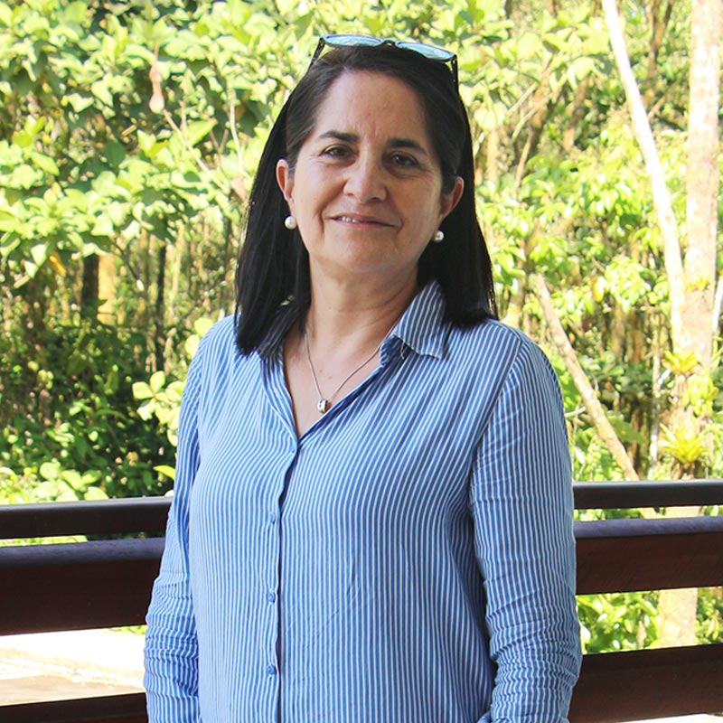
Ruth Magdalena López Ulloa
ruth.lopez@ikiam.edu.ec
Mi línea de investigación se focaliza en los servicios ambientales del recurso suelo, principalmente en los mecanismos de fijación de Carbono en el suelo, pago por estos servicios, la relación suelo-planta y el manejo de nutrientes. Entre otros intereses de investigación está el uso de isotopos como marcadores para determinar la eficiencia de uso de fertilizantes, los procesos y distribución de la contaminación en agua y suelo y estudios de los efectos de la contaminación del aire y su impacto en la salud de la población. Actualmente, mis proyectos corresponden a
1) Colaboración en el proyecto denominado “Almacenamiento de Carbono de tres tipos de Bosque de la Región Amazónica Ecuatoriana, Provincia de Napo”
2) Determinar las dinámicas de los sistemas de producción y sus múltiples beneficios económicos, ambientales y socio cultural en la cuenca alta del rio Napo (Por financiar) y
3) Colaboración con INIAP-Sacha en proyectos agroforestales (naranjilla, cacao, café), forestales, silvopastoriles y estudios de Cd en cacao.
Grupo de Investigación: No adscrito a un Grupo de Investigación
Sonia Sislema
sonia.sislema@hotmail.com
1. Diseño de compuestos bacterianos utilizados en biorremediación - biodegradación de petróleo, residuos de aceites y grasas comestibles
2. Procesos de biodegradación - compostaje y producción de biol
3. Diseño de productos alimenticios en base a microorganismos - derivados de productos lácteos
4. Diseño de procesos tecnológicos (escala industrial) para producción de compuestos microbianos
5. Investigación para producción de biofertilizantes en base a microorganismos
Grupo de Investigación: No adscrito a un Grupo de Investigación
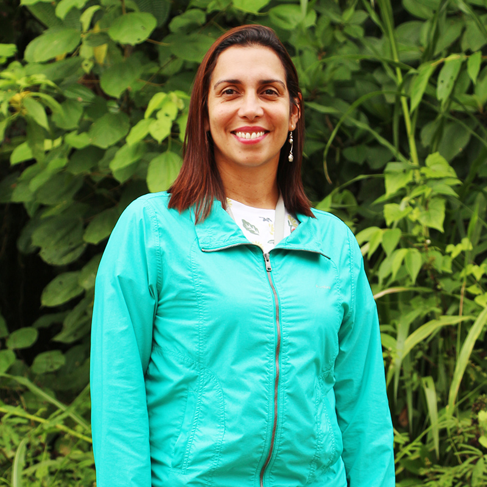
Yeimy Marlene Rojas de Hidalgo
yeimy.rojas@ikiam.edu.ec
En la actualidad trabajo en un proyecto titulado: ESTADO DE PORTADOR NASOFARÍNGEO DE STREPTOCOCCUS PNEUMONIAE Y FLORA ASOCIADA EN NIÑOS DE LAS COMUNIDADES INDÍGENAS KICHWA DEL CANTÓN TENA: IDENTIFICACIÓN DE SEROTIPOS, FACTORES DE RIESGO Y RELACIÓN CON EL ESTATUS VACUNAL” este proyecto incluye las áreas de Microbiología y Biología Molecular.
Grupo de Investigación: No adscrito a un Grupo de Investigación